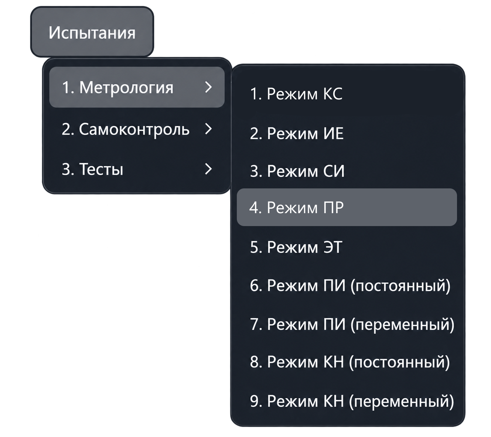
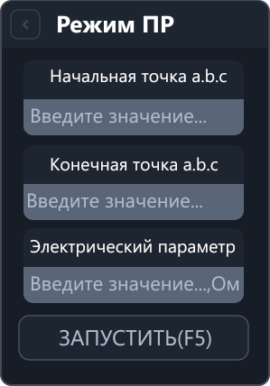

Режим ПР
Режим ПР проверяет измерение сопротивления мультиметром в режиме прозвонки. Приложение измеряет сопротивление между двумя заданными точками, сравнивает результат с эталонным значением и рассчитывает погрешность.
Откройте «Испытания → Метрология → Режим ПР». Команда открывает рабочую вкладку; измерение запускается отдельно.


Параметры
| Поле | Что указать |
|---|---|
| Начальная точка a.b.c | Первую точку подключения эталонного сопротивления. |
| Конечная точка a.b.c | Вторую точку подключения эталонного сопротивления. |
| Электрический параметр | Значение подключённого эталонного сопротивления в омах. |
В адресе a.b.c указываются номер шасси, номер модуля коммутации
и номер точки. Для своей проверки укажите фактические точки подключения.
Порядок работы
- Подключите эталонное сопротивление к выбранным точкам системы.
- Введите начальную и конечную точки.
- В поле «Электрический параметр» укажите значение эталонного сопротивления в омах.
- Нажмите «Запустить» или F5 в активной вкладке режима.
- Просмотрите измеренное сопротивление, допустимый диапазон и погрешность в протоколе. Для повторного измерения используйте действие повтора в запросе приложения.
Ввод параметров сам по себе не запускает измерение. Перед работой приложение проверяет значения и наличие необходимого оборудования в конфигурации.
Что выполняется после запуска
Приложение подключает необходимую аппаратуру, настраивает коммутацию заданных точек, переводит мультиметр в режим прозвонки и выполняет измерение.
При работе с аппаратурой из результата вычитается настроенное сопротивление коммутации. Скорректированное значение ограничивается снизу нулём и используется для оценки результата.
Результаты
- Измеренное сопротивление — результат с учётом компенсации коммутации.
- Допустимый диапазон — границы, рассчитанные приложением для заданного эталонного значения.
- Погрешность — разность измеренного и эталонного сопротивления, в омах.
Результат считается соответствующим допустимому диапазону, если он находится между нижней и верхней границами включительно. Выход за границы отмечается в протоколе.
Если в серии выполнено не менее двух измерений, при завершении приложение выводит сводку максимальной отрицательной и положительной погрешности.
В поле «Электрический параметр» вводится эталонное значение, а не ожидаемое показание мультиметра с добавленным сопротивлением коммутации.
Другие режимы описаны в разделе «Меню „Метрология“».